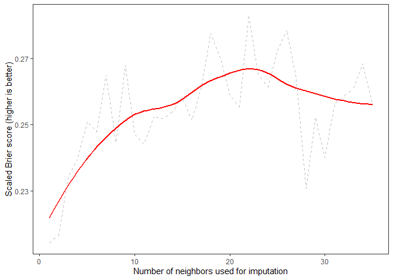

The goal of ipa is to make imputation in predictive modeling workflows more straightforward and efficient. The main functions in ipa are
brewCreate a container to hold your imputationsspice(optional) set parameters that govern the number of imputations for the given brewmashfit models that will provide imputationsfermentimpute missing values in training and (optionally) testing databottleoutput the imputed datasets in a tibble.
Installation
You can install the development version of ipa from GitHub with:
Example
First, we’ll load some packages and set a seed for reproducibility
library(tidymodels)
library(tidyverse)
library(data.table)
library(ipa)
library(magrittr)
library(ranger)
library(DescTools)
set.seed(329)Credit data
We will be adding missing values to the credit data (see ?recipes::credit_data)
K-nearest-neighbor imputation
K-nearest-neighbors (KNN) is a flexible and useful method for imputation of missing data. Briefly, each missing value is imputed by aggregating or randomly sampling a value from the K observations with greatest similarity to the current obervation. Conventional methods for KNN provide imputations using a single value of K, which makes it hard to identify an optimal value of K. Ideally, one would generate imputed datasets using a number of different values of K, and then use whichever K provided the most accurate imputed values or the most accurate prediction model (usually, these K are the same or similar). This is one of the things ipa does.
nbrs_brew <- brew(trn, outcome = Status, flavor = 'kneighbors') %>%
verbose_on(level = 1) %>%
spice(with = spicer_nbrs(neighbors = 1:35)) %>%
mash() %>%
ferment(testing = tst, dbl_impute = FALSE) %>%
bottle(type = 'tibble')
#> Imputing Seniority (N = 2133)
#> Imputing Home (N = 2541)
#> Imputing Time (N = 2570)
#> Imputing Age (N = 1894)
#> Imputing Marital (N = 2409)
#> Imputing Records (N = 1925)
#> Imputing Expenses (N = 1979)
#> Imputing Assets (N = 2194)
#> Imputing Debt (N = 2019)
#> Imputing Amount (N = 2244)
#> Fitting models to impute missing values in testing using nearest neighbors
#> Imputing Seniority (N = 703)
#> Imputing Home (N = 842)
#> Imputing Time (N = 858)
#> Imputing Age (N = 593)
#> Imputing Marital (N = 779)
#> Imputing Records (N = 607)
#> Imputing Expenses (N = 634)
#> Imputing Assets (N = 743)
#> Imputing Debt (N = 654)
#> Imputing Amount (N = 744)Evaluate imputations
If our goal is to make an accurate model, then the best value of K is the one that maximizes model accuracy. Using the pairs of imputed training and testing data from bottled ipa_brew is a fairly straightforward approach to finding out which imputed dataset provides that model. Here, we apply the parsnip interface to fit and validate one boosted decision tree ensemble to each imputed training and testing set.
anly <- nbrs_brew %>%
mutate(
bscor = map2_dbl(training, testing,
.f = ~ boost_tree(
mode = 'classification',
mtry = 4,
trees = 50,
tree_depth = 2
) %>%
set_engine('xgboost') %>%
fit(Status ~ ., data = .x) %>%
predict(new_data = .y, type = 'prob') %>%
BrierScore(
resp = as.numeric(tst$Status == 'good'),
pred = .[, 2, drop = TRUE],
scaled = TRUE
)
)
)
anly
#> # A tibble: 35 x 6
#> impute k_neighbors aggr_fun training testing bscor
#> <int> <int> <chr> <list> <list> <dbl>
#> 1 1 1 mean_mode <tibble [3,030 x ~ <tibble [1,009 x ~ 0.225
#> 2 2 2 mean_mode <tibble [3,030 x ~ <tibble [1,009 x ~ 0.242
#> 3 3 3 mean_mode <tibble [3,030 x ~ <tibble [1,009 x ~ 0.248
#> 4 4 4 mean_mode <tibble [3,030 x ~ <tibble [1,009 x ~ 0.245
#> 5 5 5 mean_mode <tibble [3,030 x ~ <tibble [1,009 x ~ 0.252
#> 6 6 6 mean_mode <tibble [3,030 x ~ <tibble [1,009 x ~ 0.252
#> 7 7 7 mean_mode <tibble [3,030 x ~ <tibble [1,009 x ~ 0.254
#> 8 8 8 mean_mode <tibble [3,030 x ~ <tibble [1,009 x ~ 0.244
#> 9 9 9 mean_mode <tibble [3,030 x ~ <tibble [1,009 x ~ 0.262
#> 10 10 10 mean_mode <tibble [3,030 x ~ <tibble [1,009 x ~ 0.250
#> # ... with 25 more rowsResults show that the optimum value of K is somewhere around 20-25. Good thing we didn’t use the default value of 5!
ggplot(anly, aes(x = impute, y = bscor)) +
theme_bw() +
theme(panel.grid = element_blank()) +
geom_line(col = 'grey', linetype = 2) +
geom_smooth(col = 'red', se = FALSE) +
labs(x = 'Number of neighbors used for imputation',
y = 'Scaled Brier score (higher is better)')
#> `geom_smooth()` using method = 'loess' and formula 'y ~ x'